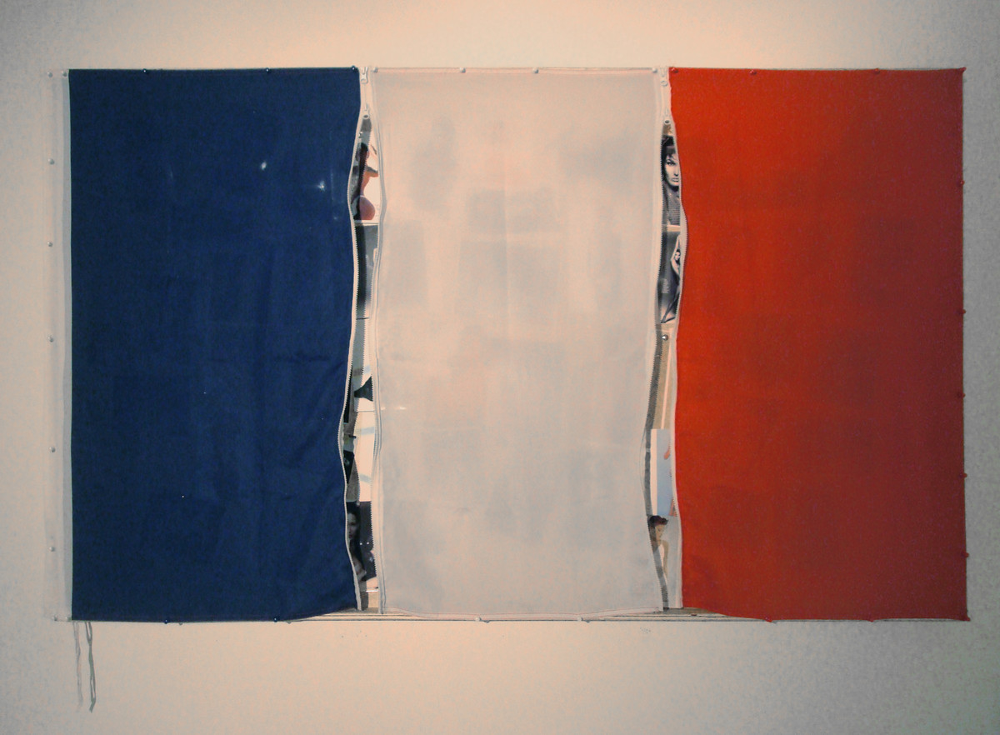
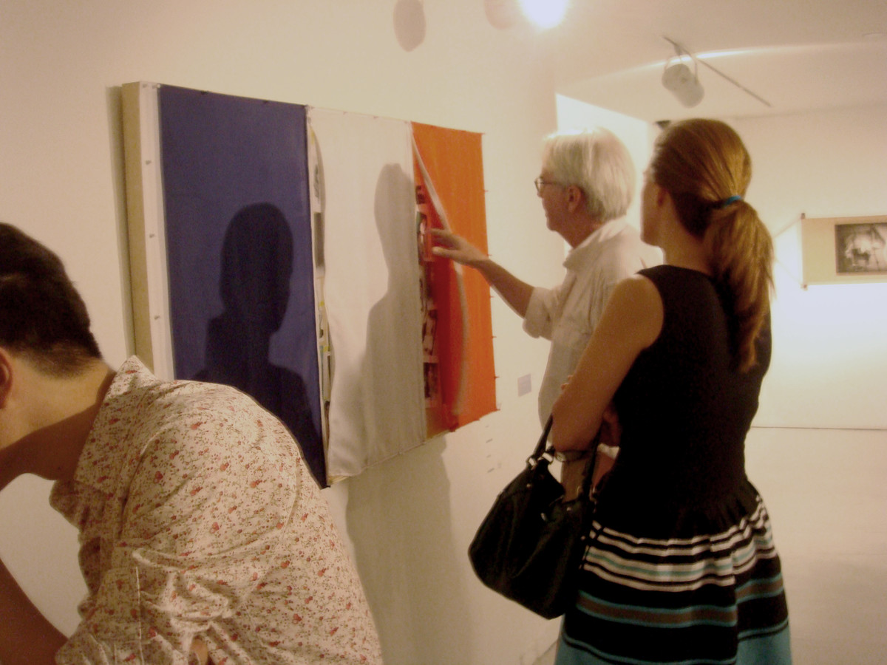
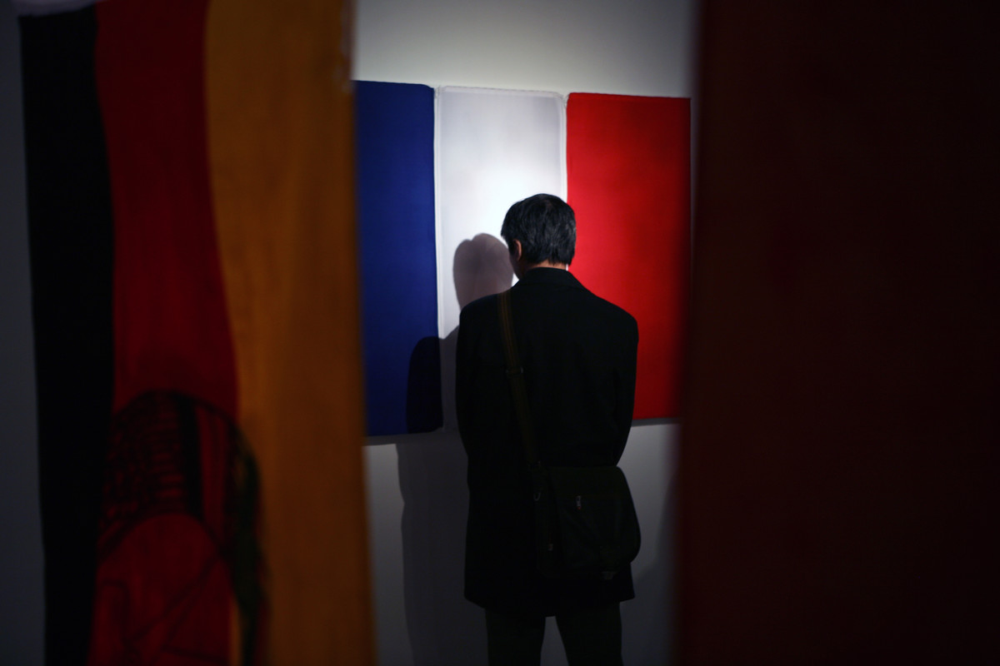
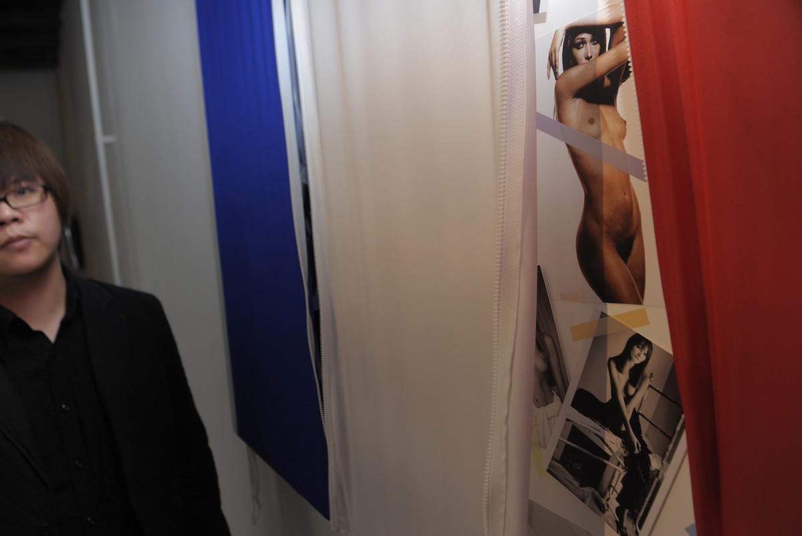

自由引导人民 | LIBERTY LEADING THE PEOPLE

装置，木质外框、丝质国旗、尼龙拉链、相纸打印照片，155x90cm，2009
Installation, Mixed midea, Wooden frame, Silk flag, Picture, Zipper , 155x90cm, 2009
将法国国旗上装上拉链，里面放上布吕尼的照片。
Fasteners were put on the French national flag behind which were posted nude photos of Carla Bruni. Wife of Nicolas Sarkozy, former President of France, Bruni was once a professional model.
《自由引导人民》看上去更像是对法国政治的玩笑，红白蓝三色旗下所覆盖的是性感的女人体。但其实红白蓝三色象征着我们从一种"全球化"（共产国际）转移向另一种全球化（自由主义）的这种光谱移动的过程。当我们拉开三色旗，意味着正在解构这种历史意识的来源，而最终吸引你的目光的是女人的身体。在这里，诱惑既是引导， 而人民则永远将会被引导。——魏星
“Freedom Leads the People” looks more like a satire of French politics, a flag of red, white and blue is covering the body of a sexy lady. Actually, these 3 colours signifies the transition of optical transition of one form of globalization (Communism) to another (Liberal Capitalism), telling us that as the audience analyzes the process of this transition, we will inevitably notice only the sexy lady. Here, temptation is what leads and the people will always be led.——Wei Xing

天安时间画廊，北京
Beijing Center for the Arts, Beijing

当代唐人艺术中心， 北京
Tang Contemporary Art, Beijing

当代唐人艺术中心， 北京
Tang Contemporary Art, Beijing